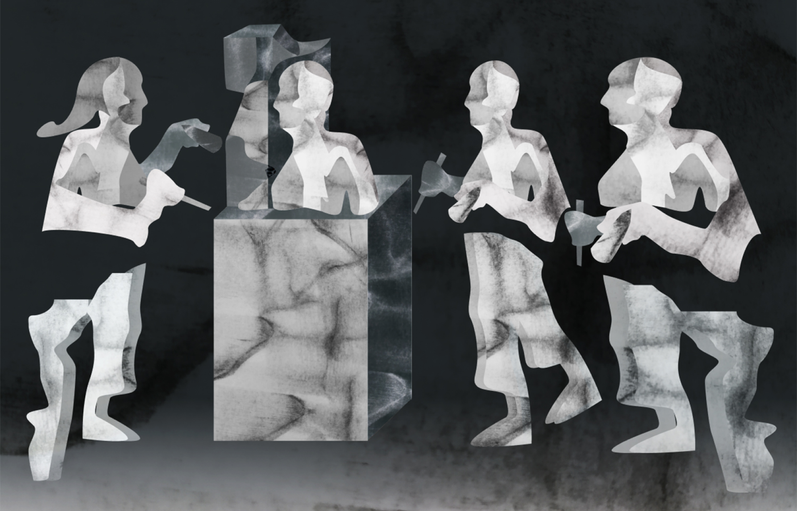
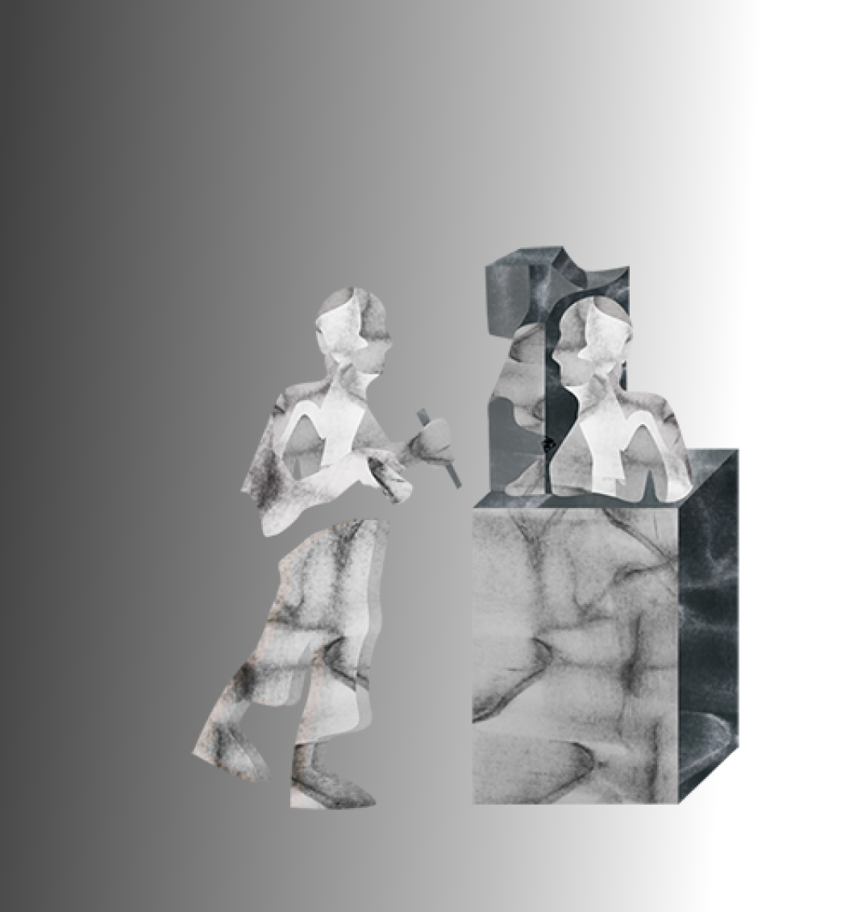
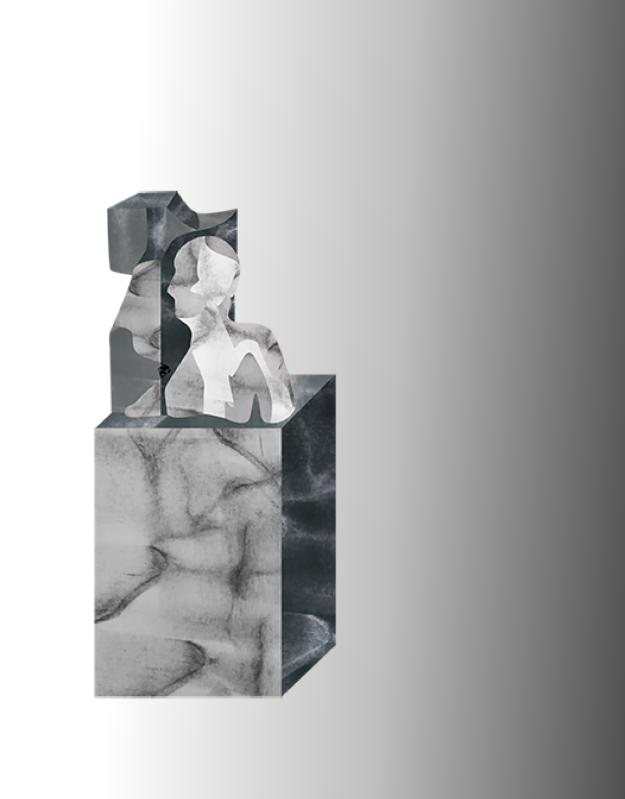

Published
Audience
Readers of UX Collective or Medium, UX professionals or people interested in XX.
Client
Melanie Polkosky
Date
August 28th, 2020


The aim was to illustrate an image that can be interpreted in multiple ways. People think many things about using personas in UX design, often things that lie in the negative spectrum. The article poses arguments in favour of using personas, but in a different way than you might think.
When less is more: Minimalist personas in UX
Illustration

The concept of the piece is firstly, the creator and the creation. I imagined the creation of a persona as something similar to that of a sculptor chipping and carving away marble to reveal the image of a human being. So the metaphor of the sculptor was chosen to represent minimal personas.


You might read the image in a way that is critical of the biases involved when creating personas the way people might know of today. Often people create a persona as an image or extension of themselves because of our ingrained biases. This point is mentioned in the article and I wanted to bring this into light. This concept is seen by the similarity between the sculptors and the statue.

The primitive forms and postures of the composition communicate an early woman and man. The intention of this was to prompt the viewer to imagine way back in time, to think that perhaps, we can go back to the begining again, and re-direct the creation of personas to make them useful in our work again.
